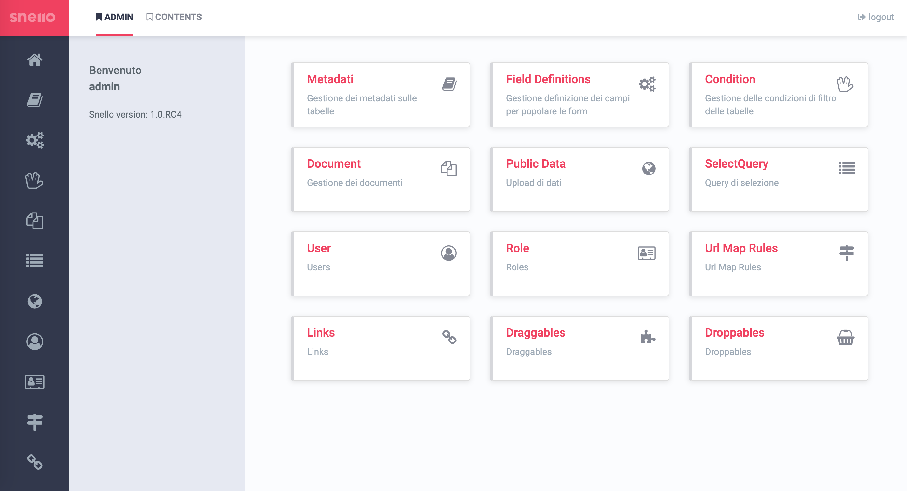
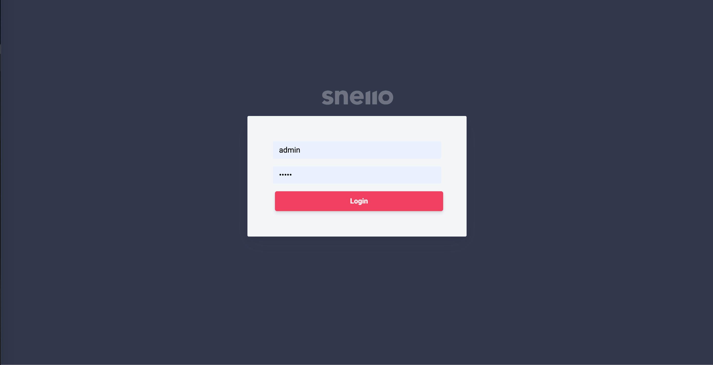
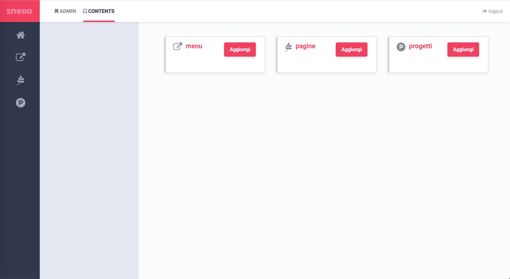

Metadata management
Create and edit tables, columns, icons, and display options directly from the admin panel.
Angular admin for Snello CMS API
Snello Admin is the Angular interface to configure metadata, dynamic forms, queries, documents, roles, and permissions for Snello CMS API from one management console.

What it really does
Snello Admin manages headless CMS configuration from an Angular console: metadata, columns, display options, forms, and API exposure logic.
Create and edit tables, columns, icons, and display options directly from the admin panel.
Create and edit forms are generated automatically from the configured field definitions.
Named query templates and runtime filter rules let you expose endpoints in a structured and controlled way.
Core capabilities
The project includes document and image management, URL mapping, users and roles, plus integrated tools such as Monaco Editor, TinyMCE, Google Maps components, and a chat widget.
Custom types, validations, and UI components to control how each field is rendered in forms and lists.
Multi-step bulk editing with per-row save, global save, and unsaved-change tracking.
Upload, organize, preview, and manage files and images stored through the API.
Administer users, assign roles, and govern permissions through the permit directive.
Product proof
Login, administration, and content management show the platform for what it is: an operational tool for governing the CMS.
Open the interface page
